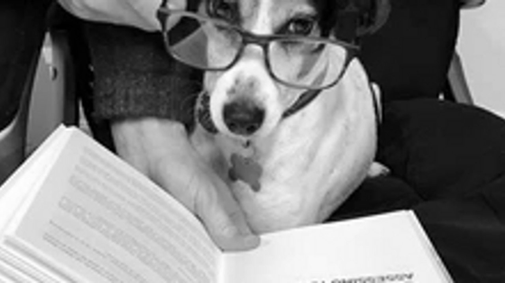

My top 10 personal development books

If you want to learn and master new skills you have to read, or listen to books/podcasts/videos that explore the world and what we believe in.
I would put the majority of my knowledge down to two things, reading and learning new things every week, and being reflective and intuitive about my surroundings and how I implement and contextualise this new found knowledge. What do I mean by this?
In this information age I think too many people are good at learning non-stop, through podcasts, social media, videos, books and audio books, we read one, then another, then listen, then watch, it can be relentless. It’s almost like an addiction, more more more.
While this is good to an extent, are you applying everything you learn in the real world, in your life? I ask as I know a lot of people that read and listen and learn lots but never seem to go forward much. Why is that? For me we need to spend equal amounts of time learning as we do implementing the stuff we have just learnt.
If we don’t develop the self awareness to understand where this new knowledge fits into our lives, then its a wasted task. Personal development has to start with self awareness.
After you read a book, how long do you spend thinking about how you’re going to use that knowledge, how it’s going to be implemented in your life, how you feel about it, what changes are you going to make?
Would it not be better to read 6 or 7 books this year and really study the content, master it, apply it, and allow it to really change you for the better, rather than 12-14 which you power through hoping it sticks while you’re already thinking about the next book you’re going to read?
Learning is awesome, but only learn what you the have time to implement and use, otherwise what’s the point, why do it at all? Something I speak about in the last step, step 11 of my book ‘How to Live an Awesome Life’, which, if you’re looking for a swiss army knife self-development book, this is it, my 16 years of reading most of the best ones, and being a coach for 16 years, is condensed into this book, which you can view HERE.
Please do take your time with what you learn, let it change you, spend time with that knowledge, allow appropriate time to genuinely grow from it. Otherwise it's just lip service to yourself, and you deserve more than that.
In this blog I’m going to outline my all-time favourite personal development books, ones I have read that have had the biggest impact on me. What is a personal development book??
I would describe a personal development book as a mixture of mindset, behavioural psychology, the business of life, health, history, spirituality and life experience. A personal development book often encompasses all of this, through stories, wisdom and perspective from another. Sometimes they are based on science and research, but equally they are based on the wisdom of great people that have been there and done it and are sharing their experience on a topic.
I’m a big fan of personal development books because I want to be the best version of myself, it’s as simple as that, me striving for awesome every single day. So I read a broad variety of books on mindset, business, life, and just anything that develops me, my business and my relationships. All key skills of life to master.
So, let's crack on with this blog. I’ll give you the title, author, why I like it, and who the book is for. Please don’t go buy 10 books just off my recommendation, again identify what’s important to solve or grow from in your life right now and focus your time and energy there and the books that can help you now.
Extreme ownership by Jocko Willink & Leif Babin
When I’m interviewed on podcasts and on TV this is a book I often quote in my top 3 of all time. Who should read this? Everyone, it’s a book I wish I had personally written. It’s for people looking to take control of their life and is a book I would recommend to every human on the planet. In short, when I took extreme ownership of my life only good things happened and I take pride in teaching these principals to everyone that will listen, it’s one of the first concepts I talk about in my coaching program Fat Loss for Life. Top recommendation.
Link to purchase on Amazon: Buy here
7 Habits of Highly Successful People by Stephen Covey
Again another book I recommend to everyone. If you want to be your best self and you want to get into the mindset of an all-round winner, to be the leader in your own life in the way you envisage for yourself, get this book, again its one I recommend to everyone, hands down. It covers so much, life, perspective, relationships, personal growth, parenting, its just awesome.
Link to purchase on Amazon: Buy here
How to be Brilliant by Michael Heppell
Awesome book and I managed to get him on my podcast for a chat which was…. AWESOME! I love this book as it enabled me to channel my inner values, to identify what I want to focus my energy on, why, and what makes me, me. It was also very motivational and was a book I did every exercise in that it asked of me and as a result it had a big impact on me. I’ve got the main values list I created from the book still on my wall at home in my office to this day.
Link to purchase on Amazon: Buy here
12 rules for Life by Jordan B Peterson
Another all-round life book, one by a man who’s studied human psychology for his whole life and puts his many years of study and clinical experience into a book. He also has some incredible stuff on YouTube, I’d argue his best work is on YouTube, but the book is awesome too. Big fan. If you want to get ahead in life and hack the human brain and some of the aspects of human conditioning, grab a copy.
Link to purchase on Amazon: Buy here
The Four Tendencies by Gretchen Rubin
This book is for the person looking to understand themselves and their character better, but also of their loved ones to better manage your interactions and relationships. After all, if you understood yourself better, and your partner, parents and kids, wouldn’t you live a more fulfilling life with more fulfilling relationships and experiences. After all, we are who we are, we can continue to fight it and get nowhere, or accept and understand what is and optimise the people we are. An awesome book on understanding our own and others character traits.
Link to purchase on Amazon: Buy here
Principals: Life and Work by Ray Dalio
If you want to know the secrets of life and in business read this book. Ray Dalio is a powerhouse in the world of business and success and this book is a gold mine of his wisdom, which is abundant. If you want the tips, knowledge and mindset of a great man this book is for you, big fan.
Link to purchase on Amazon: Buy here
The Obstacle is the Way by Ryan Holiday
Ryan has some awesome books, this is one of them (also love Ego is the Enemy and as I write this I’m reading The Daily Stoic, one chapter every morning as I make coffee). This book looks at life and what’s in front of us and being able to crush the many obstacles that gets thrown at us. After all we’re good at taking the easy route in life, how do we get around this and achieve more. Ryan will show you how and teach you that actually the obstacle is the way.
Link to purchase on Amazon: Buy here
Loving What Is: Four Questions that can Change your life by Byron Katie
A powerful look at who we are, what we want and how to decipher our emotions. Many of us are stuck in our beliefs, we struggle to navigate how we feel, why, and what we want out of life. If you’re ready to go deep there is no better place to start than with Byron Katie.
Link to purchase on Amazon: Buy here
Atomic Habits by James Clear
Want to understand your habits, hack them, and generally take more control over your life? James Clear outlines our habits and how they define us into simple terms and gives you practical steps to hack your habits to create a more resilient, more productive, happier human. He’s also been on my podcast, twice, both blockbuster episodes. Awesome book, perfect for anyone looking to hack their habits and get more out of life. After all, our habits define our actions, and the actions we repeat sculpt the person we are.
Link to purchase on Amazon: Buy here
The Life Changing Magic of not Giving a F**k by Sarah Knight
Not giving a f*** is an easy thing to say, but few can genuinely do. We often take peoples words to heart too easily, and half the time don’t even know them, but their words stab us like our best friend has rammed a dagger in our back. Thing is, this worry holds us back. It’s time to stop that and learn to not give a flying f***. I love this book, it’s a quick and beautiful read, I’d recommend it to anyone that struggles to let go of what people think of them.
Link to purchase on Amazon: Buy here
High 5 to all these authors for creating great pieces of work.
Want a distillation of all the above in ONE book, then grab my book ‘How to live an Awesome Life’, which takes many of the above theories, alongside more health, fitness and wellbeing knowledge and science, and weaves it through my own life experience. Available in written and audio formats: How to live an Awesome life